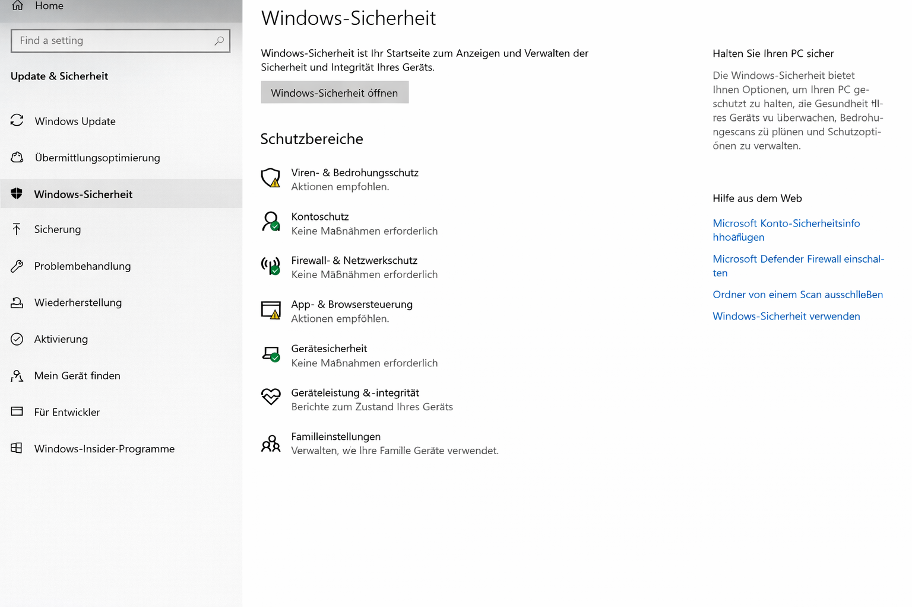
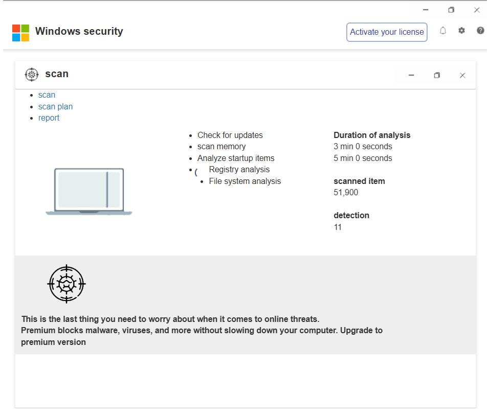

 Windows-Sicherheit Unterstützung für Wählfenster:
Windows-Sicherheit Unterstützung für Wählfenster:  Bitte rufen Sie uns direkt an 0044 56 0368 5636
Bitte rufen Sie uns direkt an 0044 56 0368 5636

 Bitte rufen Sie uns direkt an 0044 56 0368 5636
Bitte rufen Sie uns direkt an 0044 56 0368 5636
Windows Defender – Sicherheitswarnung
Aus Sicherheitsgründen ist der Zugriff auf dieses System nicht möglich. Ihr Computer wurde als mit Schadsoftware infiziert gemeldet.Bitte wenden Sie sich an den Windows-Support:
Bitte rufen Sie uns direkt an 0044 56 0368 5636
Microsoft
Rufen Sie den Support an:
Bitte rufen Sie an
0041 43 216 32 29
Möchten Sie diese Seite wirklich verlassen?